Eleven worlds. One studio.
A video studio for the whole journey of a film.
A video studio for the whole journey of a film.
Montage Pro is a video studio for the whole life of a film: ingest, sync, review, captions, sound, picture, library and the edit, in eleven worlds you can scroll through.
A video studio for the whole journey of a film.
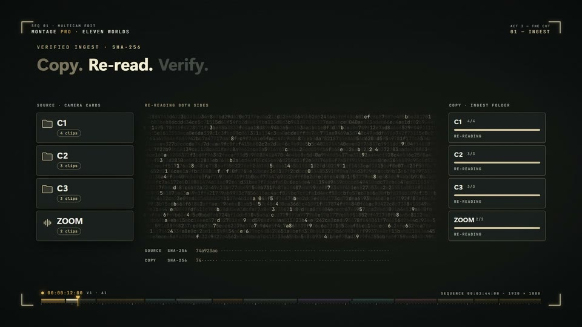
Bring cards, cameras and folders into one project.
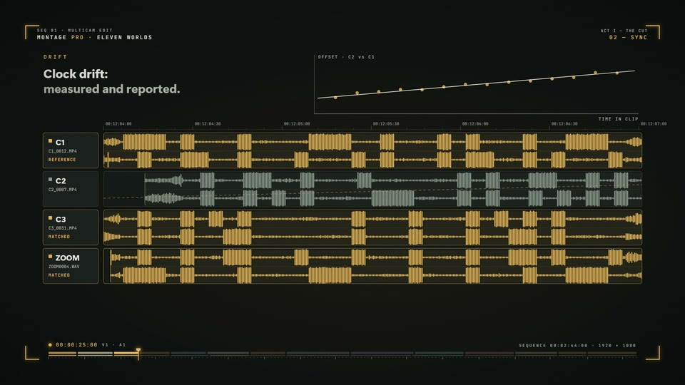
Line up cameras and sound on one timeline.
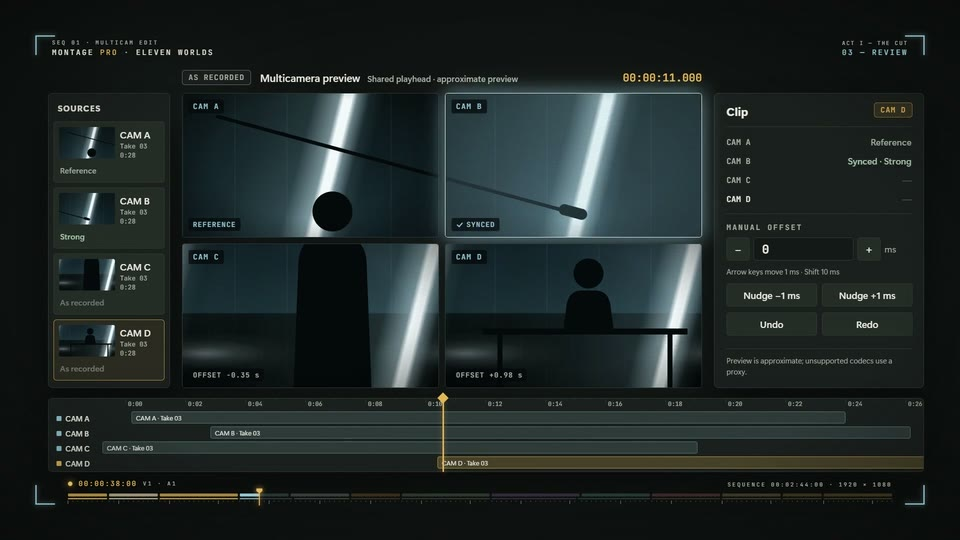
Watch every angle together and choose the moment.
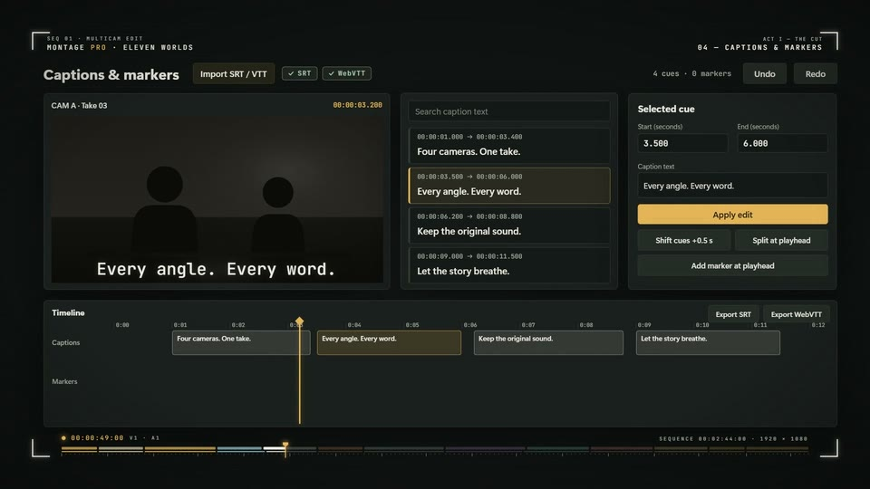
Turn speech into captions you can review.
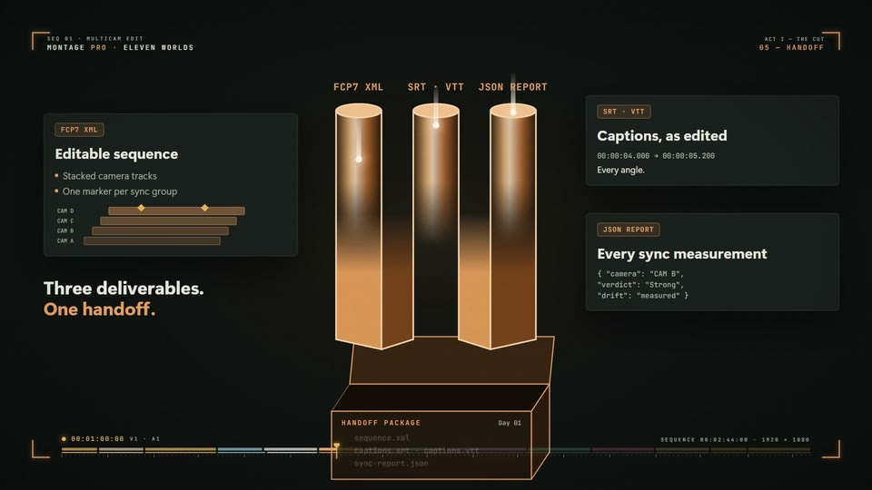
Package the work for the next person in the chain.
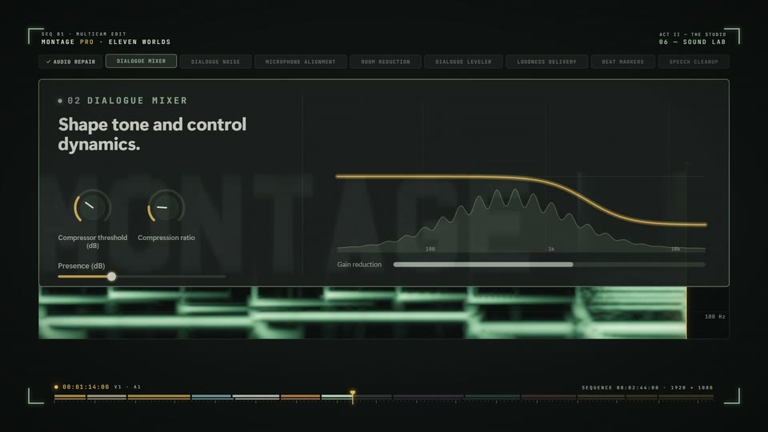
Shape and check the sound of every scene.
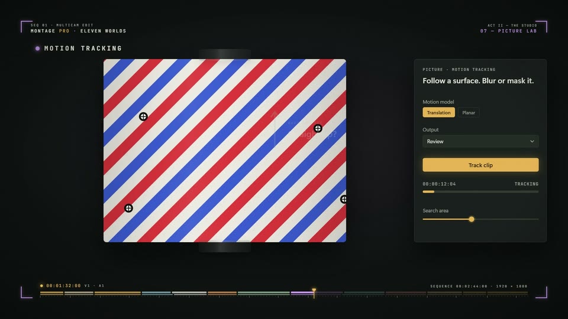
Look closely at colour, exposure and the frame.
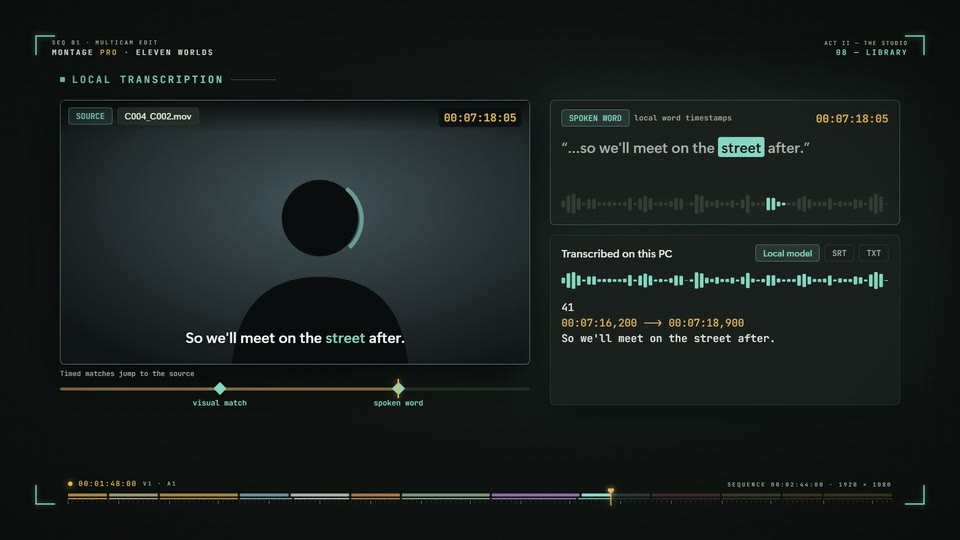
Find any clip, take or project again.
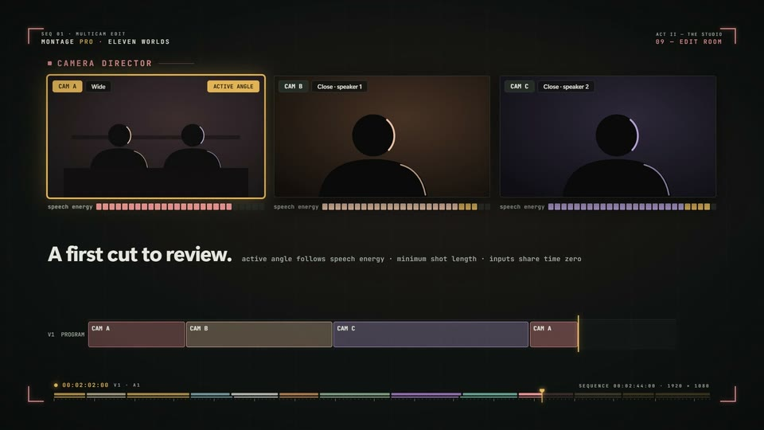
Cut the story together.
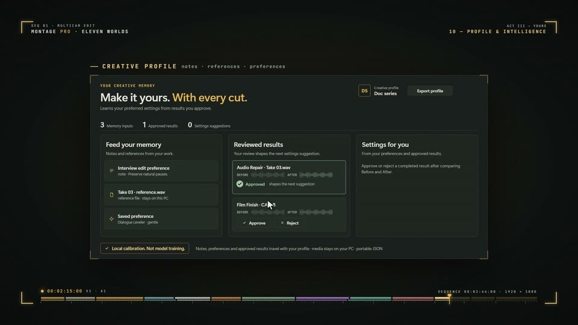
Keep the choices that make your work yours.
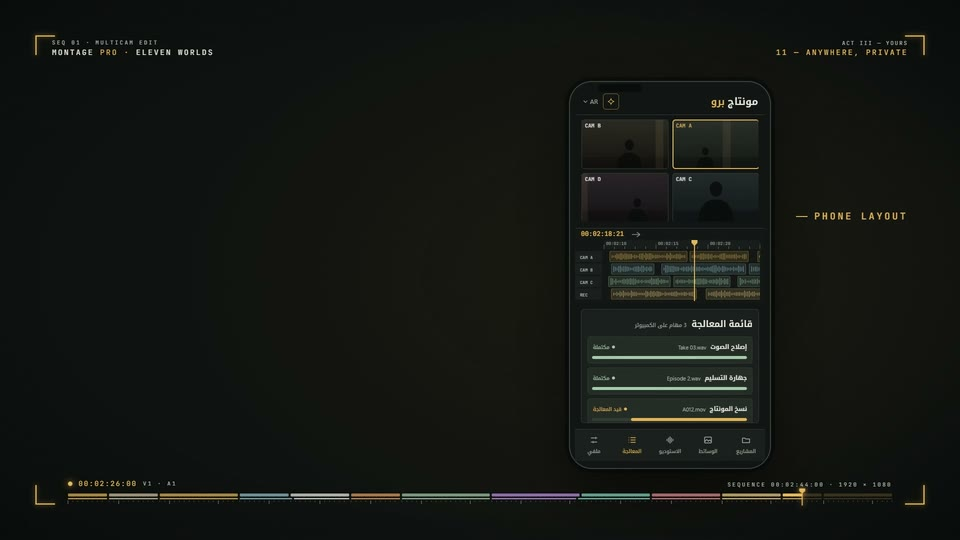
Follow the project from another screen.
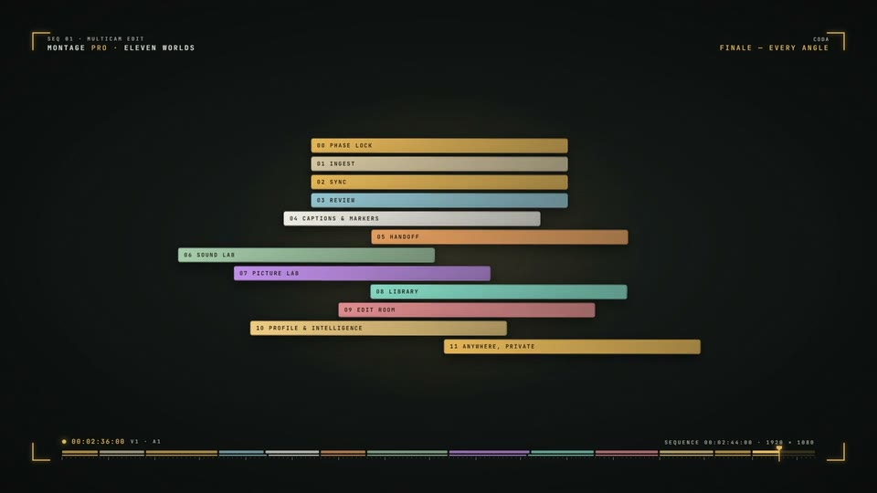
Return to a world, or start the next film.